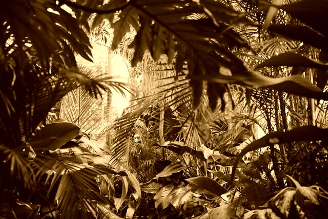

The Shard
A location that not many people have seen. It is a sea of randomised objects, flickering glitches in reality and pure chaos manifest. Strange monsters are born here and it is often known as the “Realm of Monsters”. Completely hostile to human life. It is the source of wildmagic and its effects can be felt in any region nearby. It is theorised to have once undergone rapid expansion, but something stopped it.
STOP! Go no further!
- FACT. More than 300 explorers, including trained mages, have gone missing in the Shard
- FACT. You need specialised equipment to survive for any amount of time here.
- FACT. There is nothing here worth dying for.
Radix
Radix is an autocracy consisting of a branching web of settlements across the entire continent it resides on. Its capital sits on a truly enormous tree said to have been a gift from The Scorched Goddess. Its leader is a centuries old druid human names Raxis Longhorn who has ruled with an iron fist for decades. The people and government of Radix see technology and most civilisations as abominations and perversions of nature.
